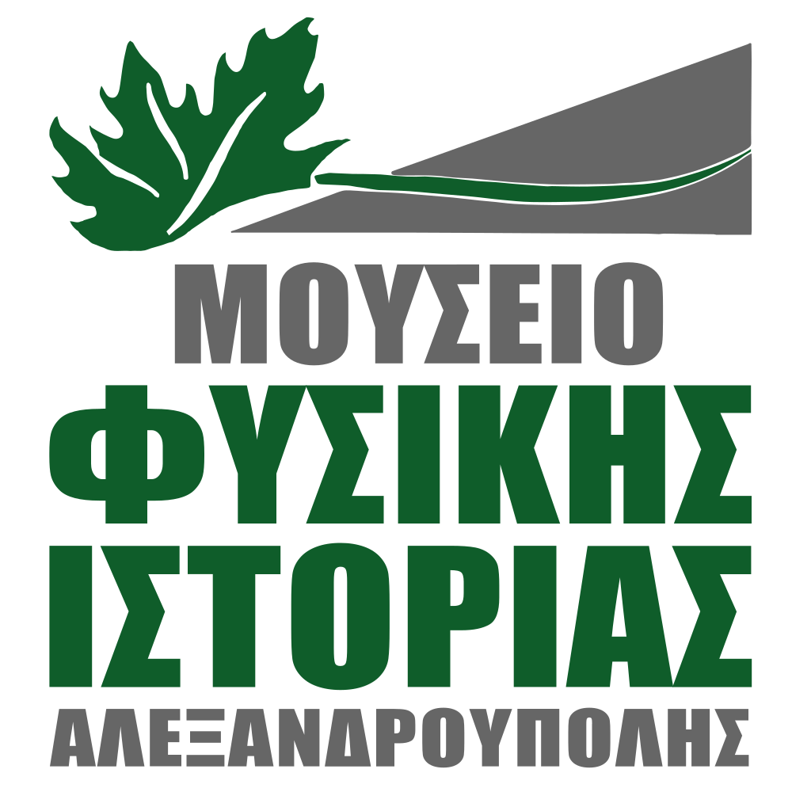
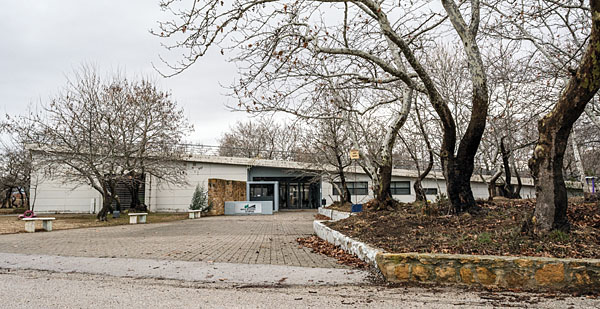
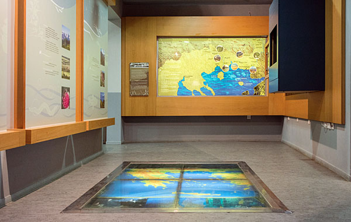
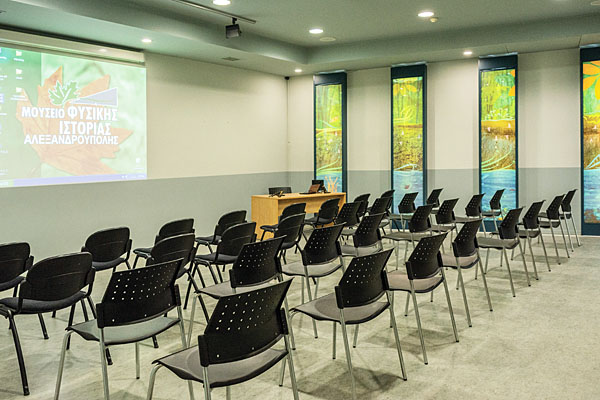
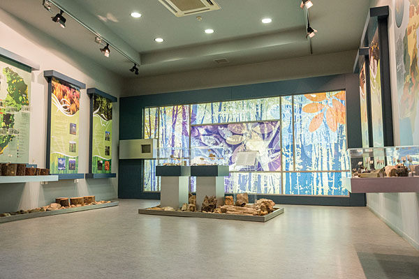
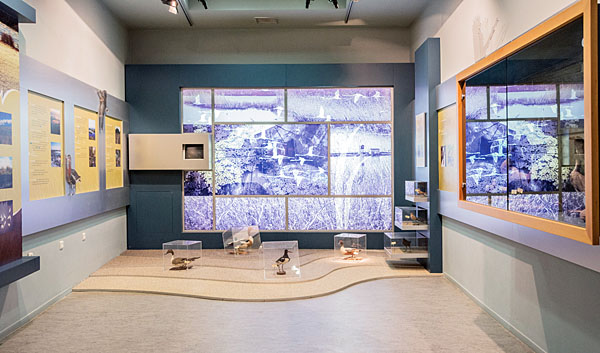
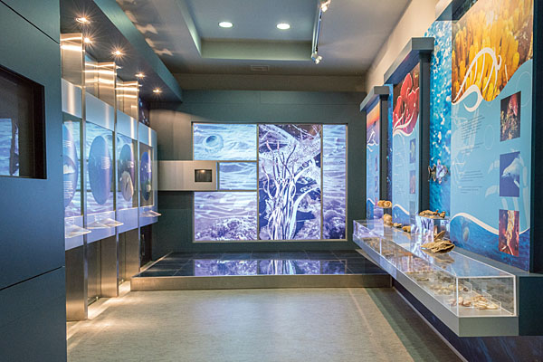
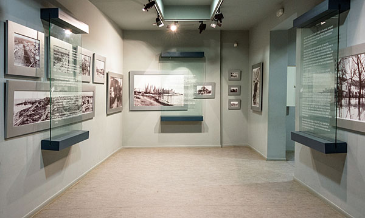

Σε ένα όμορφο και καταπράσινο σημείο του Πλατανότοπου της Μαΐστρου (Ανατολικός οικισμός της Αλεξανδρούπολης) βρίσκεται το Μουσείο Φυσικής Ιστορίας Αλεξανδρούπολης (ΜΦΙΑ). Πρόκειται για ένα σύγχρονο κτίριο, εναρμονισμένο πλήρως με το φυσικό περιβάλλον.
Η ιδέα για την δημιουργία του Μουσείου ξεκίνησε από την παρουσία στην ευρύτερη περιοχή της Θράκης, πλούσιων βιοτόπων και προστατευόμενων περιοχών με στόχο την ανάδειξη αυτού του φυσικού πλούτου.
Βασικός σκοπός του Μουσείου Φυσικής Ιστορίας Αλεξανδρούπολης είναι η ανάδειξη της βιοποικιλότητας, σε όλα της τα επίπεδα (γενετική, ειδών, οικοσυστημάτων, τοπίου) και των γεωφυσικών και οικολογικών ιδιαιτεροτήτων της. Ειδικότερα, στόχοι του Μουσείου είναι η εκπαίδευση, η έρευνα, η μάθηση και η ευαισθητοποίηση για τα οικοσυστήματα που συναντάμε στην Θράκη. Επίσης στόχοι είναι η ψυχαγωγία καθώς και η ενδυνάμωση και ανάδειξη της τοπικής κοινωνίας.

Η αίθουσα εισάγει τον επισκέπτη γενικά στην έννοια της βιοποικιλότητας και στα οικολογικά χαρακτηριστικά του συνόλου της Ελλάδος. Παρέχει πληροφορίες για τους τύπους των προστατευόμενων περιοχών και τις ιδιαιτερότητες των οικοσυστημάτων της Ανατολικής Μακεδονίας και Θράκης.

Η αίθουσα πολύθεάματος έχει στόχο την αξιοποίηση της τεχνολογίας για προβολές εκπαιδευτικών οπτικοακουστικών έργων και διαδραστικές εκπαιδευτικές δράσεις στο ιδιαίτερα προσεγμένο και ανοιχτό χώρο.

Στη θεματική αυτή ενότητα παρουσιάζεται μια σύνθεση των χερσαίων οικοσυστημάτων του νομού Έβρου με κυρίαρχα το Δάσος της Δαδιάς, τα βουνά του Έβρου, τις Τρείς Βρύσες και το Φεγγάρι Σαμοθράκης. 0 επισκέπτης θα έχει την ευκαιρία να πληροφορηθεί για τα απολιθωμένα ευρήματα στον Έβρο καθώς και για τη γεωλογική μορφολογία του νομού.

Στην ενότητα αυτή παρουσιάζεται το υγρό στοιχείο του νομού Έβρου, ποτάμια, χείμαρροι, λίμνες. Ενδιαφέρον παρουσιάζουν οι απεικονίσεις του παγκοσμίως γνωστού, δέλτα του ποταμού Έβρου.

Το βαθύ μπλε της θάλασσας είναι το κυρίαρχο στοιχείο της ενότητας αυτής. Απεικονίσεις του βυθού, λιβαδιών Ποσειδωνίας, συνθέσεις με κοχύλια, σπόγγους και άμμο, παρουσιάζουν τις θάλασσες της Ελλάδος και ιδιαίτερα, το θρακικό Πέλαγος.

Οι ανθρώπινες δραστηριότητες στο αστικό και αγροτικό περιβάλλον της περιοχής του Έβρου, παρουσιάζονται στην αίθουσα αυτή μέσω μιας σειράς συλλεκτικών φωτογραφιών με θέμα την ιστορία του ανθρώπου και του περιβάλλοντος.
Το Μουσείο είναι πλήρως προσβάσιμο από άτομα με ειδικές ανάγκες.
Οι χώροι του Μουσείου διατίθενται για κάθε περίσταση και δράση έπειτα από συνεννόηση με την διεύθυνση του Μουσείου.
Διεύθυνση: Πλατανότοπος Μαΐστρου Τηλέφωνο: 2551080204 email: mfialexpolis@gmail.com Ιστότοπος: www.mfialexpolis.gr